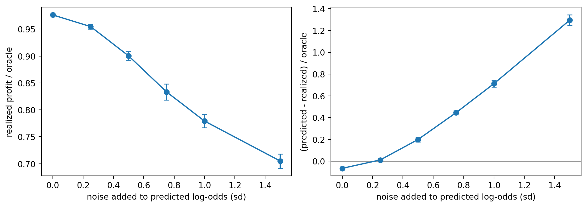
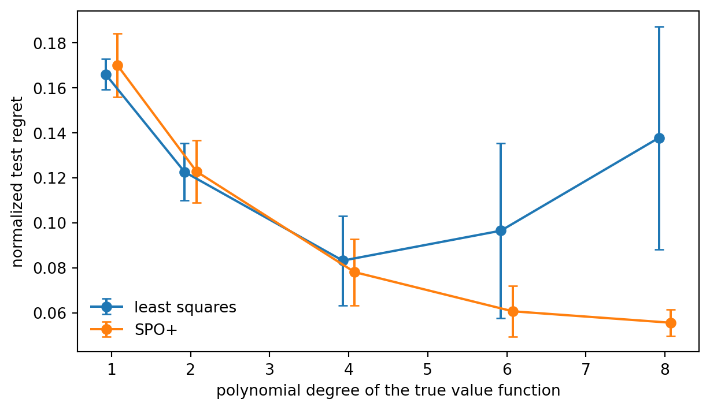

Predict, then optimize: conversion scores, capacities, fairness constraints, and what prediction error does to a decision
Consider a lending marketplace. Every day thousands of consumers fill in a short form saying they are interested in a credit card or a personal loan. The marketplace does not lend. It passes each lead to one of its partner banks and is paid when the lead converts into an approved account. Each bank pays a different amount for each product, accepts only applicants above its own credit floor, and can process only so many applications per day. Contacting a lead also costs money (a text message, a call-center follow-up), and the marketing budget is fixed. Which lead should go to which bank, for which product?
The naive answer, “send every lead to the bank that pays most”, ignores that a lead that converts at one bank may be declined at another, and that the best-paying bank fills up by mid-morning. The right answer combines two pieces. A prediction model estimates the probability that lead \(i\) converts if offered product \(j\). An optimization model then chooses the allocation that maximizes expected profit subject to capacities, budgets, eligibility rules, and contractual commitments. This chapter builds both, shows why the optimization layer is an integer program with unusually friendly structure, and then asks the question that the two-stage design tends to hide: what happens to the decision when the predictions are wrong?
234.1 From Bank-Product Counts to Lead-Level Assignment
The simplest version of the problem works with counts. Let banks be indexed by \(b\) and products by \(k\), and let \(x_{bk}\) be the number of leads sent to bank \(b\) for product \(k\), with revenue \(r_{bk}\) and contact cost \(c_{bk}\) per lead. With a total of \(L\) leads and a per-pair capacity \(U_{bk}\),
This integer linear program (ILP) is a good first model for planning conversations with partners, and scipy.optimize.milp (Virtanen et al., 2020), which calls the HiGHS solver (Huangfu and Hall, 2018), solves it instantly.
Code
import numpy as npimport pandas as pdimport matplotlib.pyplot as pltfrom scipy.optimize import milp, linprog, LinearConstraint, Bounds, linear_sum_assignmentfrom scipy import sparserng = np.random.default_rng(1206)banks, products = ["Bank A", "Bank B", "Bank C"], ["Card", "Loan"]pairs = [(b, k) for b in banks for k in products]rev = rng.integers(50, 101, len(pairs)).astype(float) # payout per leadcost = rng.integers(5, 16, len(pairs)).astype(float) # contact cost per leadL, U =100, 50res = milp(c=-(rev - cost), integrality=np.ones(len(pairs)), bounds=Bounds(0, U), constraints=LinearConstraint(np.ones((1, len(pairs))), 0, L))agg = pd.DataFrame(pairs, columns=["bank", "product"]).assign( margin=rev - cost, leads=res.x.round().astype(int))print("optimal profit:", -res.fun)agg
optimal profit: 7950.0
bank
product
margin
leads
0
Bank A
Card
55.0
0
1
Bank A
Loan
43.0
0
2
Bank B
Card
45.0
0
3
Bank B
Loan
90.0
50
4
Bank C
Card
51.0
0
5
Bank C
Loan
69.0
50
The solution is exactly what a person would do by hand: fill the pair with the highest margin up to its capacity, then the next, until the leads run out. The model is trivial because it treats all leads as identical. They are not. The value of a lead to a bank depends on whether that particular person will be approved and will take up the offer, so the decision has to be made lead by lead.
234.1.1 The lead-level model
Let \(i = 1, \dots, n\) index leads and \(j = 1, \dots, J\) index offers (a bank and product pair). Let \(e_{ij} \in \{0, 1\}\) indicate whether lead \(i\) meets offer \(j\)’s eligibility rules, \(p_{ij}\) the probability that lead \(i\) converts if routed to offer \(j\), \(r_j\) the payout per conversion, and \(c_j\) the cost of routing a lead to offer \(j\). The decision \(x_{ij} \in \{0, 1\}\) routes lead \(i\) to offer \(j\). The expected-profit-maximizing allocation solves
\[
\begin{aligned}
\max_{x}\quad & \sum_{i,j} (p_{ij} r_j - c_j)\, x_{ij} \\
\text{s.t.}\quad & \sum_{j} x_{ij} \le 1 && \text{each lead goes to at most one offer} \\
& \sum_{i} x_{ij} \le U_j && \text{offer capacity} \\
& \sum_{i,j} c_j x_{ij} \le B && \text{contact budget} \\
& x_{ij} \le e_{ij}, \quad x_{ij} \in \{0, 1\} && \text{eligibility and integrality.}
\end{aligned}
\tag{234.2}\]
Exclusivity (one offer per lead) is a common contractual and regulatory requirement for lead sellers. Selling the same consumer to several lenders at once generates a flood of calls to the consumer and hard credit inquiries that hurt their score.
234.2 A Simulated Marketplace
We simulate a day with 600 leads and eight offers (four banks, two products). Leads have a credit score, an income, and a stated intent (card or loan). Each offer has a payout, a contact cost (loan leads need a call-center follow-up and cost more), a minimum credit score, and a daily capacity. The true conversion probability has a “sweet spot” in credit score that differs by bank: prime lenders convert high scores best, near-prime lenders convert the middle of the distribution, and very high scores convert less often everywhere because those consumers shop around.
Conversion probabilities are learned from history. We generate 6,000 past leads that were routed to a random eligible offer, which is the exploration data a marketplace needs to learn offer-specific models, and fit one logistic regression per offer.
Code
from sklearn.linear_model import LogisticRegressionJ_BANKS, PRODUCTS = ["A", "B", "C", "D"], ["card", "loan"]offers = pd.DataFrame([(b, k) for b in J_BANKS for k in PRODUCTS], columns=["bank", "product"])J =len(offers)is_loan = (offers["product"] =="loan").to_numpy()offers["payout"] = np.where(is_loan, rng.uniform(250, 400, J), rng.uniform(120, 200, J)).round()offers["contact_cost"] = np.where(is_loan, 8.0, 2.0)offers["min_score"] = np.tile([700, 700, 660, 660, 620, 620, 580, 580], 1)[:J]offers["capacity"] = rng.integers(40, 80, J)sweet = np.repeat([0.9, 0.4, -0.1, -0.6], 2) # standardized score each bank converts bestbase = np.where(is_loan, -2.6, -2.0) + rng.normal(0, 0.2, J)def make_leads(n, rng): score = np.clip(rng.normal(670, 60, n), 500, 850) income = rng.lognormal(np.log(60_000), 0.4, n) intent_loan = (rng.random(n) <0.45).astype(float)return pd.DataFrame({"score": score, "income": income, "intent_loan": intent_loan})def features(leads): z = (leads.score.to_numpy() -670) /60 inc = np.log(leads.income.to_numpy() /60_000) /0.4return np.column_stack([z, z **2, inc, leads.intent_loan.to_numpy()])def true_logit(leads): z = (leads.score.to_numpy()[:, None] -670) /60 inc = np.log(leads.income.to_numpy() /60_000)[:, None] /0.4 intent_match = np.where(is_loan[None, :], leads.intent_loan.to_numpy()[:, None],1- leads.intent_loan.to_numpy()[:, None])return (base[None, :] -0.7* (z - sweet[None, :]) **2+0.3* inc+1.2* intent_match -0.4* np.maximum(z -1.5, 0))def eligible(leads):return leads.score.to_numpy()[:, None] >= offers.min_score.to_numpy()[None, :]sigmoid =lambda u: 1/ (1+ np.exp(-u))# Historical exploration data: each past lead was routed to a random eligible offerhist = make_leads(6000, rng)E_h, P_h = eligible(hist), sigmoid(true_logit(hist))has_offer = E_h.any(axis=1)hist, E_h, P_h = hist[has_offer].reset_index(drop=True), E_h[has_offer], P_h[has_offer]choice = np.array([rng.choice(np.flatnonzero(e)) for e in E_h])converted = rng.random(len(hist)) < P_h[np.arange(len(hist)), choice]F_h = features(hist)conv_models = [LogisticRegression(C=1.0, max_iter=1000).fit(F_h[choice == j], converted[choice == j])for j inrange(J)]def predict_p(leads): F = features(leads)return np.column_stack([m.predict_proba(F)[:, 1] for m in conv_models])today = make_leads(600, rng)E, P_true, P_hat = eligible(today), sigmoid(true_logit(today)), predict_p(today)offers.assign(hist_leads=np.bincount(choice, minlength=J), hist_conv_rate=[converted[choice == j].mean() for j inrange(J)]).round(3)
bank
product
payout
contact_cost
min_score
capacity
hist_leads
hist_conv_rate
0
A
card
170.0
2.0
700
65
237
0.219
1
A
loan
313.0
8.0
700
79
248
0.101
2
B
card
184.0
2.0
660
73
495
0.202
3
B
loan
387.0
8.0
660
77
470
0.104
4
C
card
158.0
2.0
620
79
820
0.190
5
C
loan
351.0
8.0
620
56
841
0.071
6
D
card
142.0
2.0
580
74
1267
0.162
7
D
loan
337.0
8.0
580
48
1246
0.082
234.3 Solving the Assignment ILP
The ILP has one binary variable per eligible lead and offer pair. We build the constraint matrix sparsely and pass it to milp. As baselines we use a greedy heuristic that walks down the list of pairs in order of expected profit, assigning whenever the lead is still free and the offer and budget still have room, and the “send to the highest payout” rule that ignores conversion probabilities.
Code
def build(E, V, cost_j, cap, budget=None):"""Sparse constraint matrices for the lead-level ILP over eligible pairs.""" ii, jj = np.nonzero(E) m =len(ii) rows = [sparse.csr_matrix((np.ones(m), (ii, np.arange(m))), shape=(E.shape[0], m)), sparse.csr_matrix((np.ones(m), (jj, np.arange(m))), shape=(E.shape[1], m))] ub = [np.ones(E.shape[0]), cap.astype(float)]if budget isnotNone: rows.append(sparse.csr_matrix(cost_j[jj][None, :])) ub.append(np.array([budget]))return ii, jj, V[ii, jj], sparse.vstack(rows).tocsr(), np.concatenate(ub)def solve_ilp(E, P, extra=None, budget=None, relax=False): V = P * offers.payout.to_numpy()[None, :] - offers.contact_cost.to_numpy()[None, :] ii, jj, v, A, ub = build(E, V, offers.contact_cost.to_numpy(), offers.capacity.to_numpy(), budget) cons = [LinearConstraint(A, -np.inf, ub)]if extra isnotNone: cons += extra(ii, jj) res = milp(c=-v, constraints=cons, bounds=Bounds(0, 1), integrality=np.zeros_like(v) if relax else np.ones_like(v)) X = np.zeros(E.shape)if res.status ==0: X[ii, jj] = res.xreturn X, resdef value(X, P):returnfloat((X * (P * offers.payout.to_numpy() - offers.contact_cost.to_numpy())).sum())def greedy(E, P, budget): V = P * offers.payout.to_numpy() - offers.contact_cost.to_numpy() ii, jj = np.nonzero(E & (V >0)) order = np.argsort(-V[ii, jj]) cap, spent, free = offers.capacity.to_numpy().copy(), 0.0, np.ones(E.shape[0], bool) X = np.zeros(E.shape)for i, j inzip(ii[order], jj[order]): cj = offers.contact_cost.iat[j]if free[i] and cap[j] >0and spent + cj <= budget: X[i, j], free[i], cap[j], spent =1, False, cap[j] -1, spent + cjreturn XBUDGET =1500.0X_ilp, res_ilp = solve_ilp(E, P_hat, budget=BUDGET)X_orc, _ = solve_ilp(E, P_true, budget=BUDGET)X_grd = greedy(E, P_hat, BUDGET)P_flat = np.where(E, 1.0, 0.0) # "highest payout" rule: ignore conversionX_pay, _ = solve_ilp(E, P_flat *0.15, budget=BUDGET)summary = pd.DataFrame({"policy": ["highest payout", "greedy on predictions", "ILP on predictions", "ILP on true p (oracle)"],"leads routed": [X.sum() for X in (X_pay, X_grd, X_ilp, X_orc)],"predicted profit": [value(X, P_hat) for X in (X_pay, X_grd, X_ilp, X_orc)],"realized expected profit": [value(X, P_true) for X in (X_pay, X_grd, X_ilp, X_orc)]})summary.round(0)
policy
leads routed
predicted profit
realized expected profit
0
highest payout
405.0
11645.0
12426.0
1
greedy on predictions
327.0
19143.0
20020.0
2
ILP on predictions
405.0
21161.0
21816.0
3
ILP on true p (oracle)
405.0
20250.0
22960.0
Three things stand out. Routing by payout alone throws away a large share of the achievable profit, because it sends near-prime applicants to prime lenders that will decline them. The greedy heuristic is good but not optimal: it commits early leads to the scarce, high-payout offers even when a later lead would have been a better use of that slot. The ILP solved on predicted probabilities comes close to the oracle solved on the true probabilities, which shows the ceiling. Notice also that the predicted and realized profit of the same allocation differ. Here the fitted conversion models are slightly conservative, so the plan under-promises, but the direction of that gap is not random in general, as Section 234.5 shows.
234.3.1 Why the LP relaxation is (almost) free
Without the budget row, Equation 234.2 is a transportation problem: every variable appears in exactly one lead row and one offer row with coefficient one. Such a constraint matrix is totally unimodular, which means that every vertex of the LP relaxation (with \(0 \le x_{ij} \le 1\)) is integral (Bertsimas and Tsitsiklis, 1997, chapter 7). The simplex method returns an integer solution without any branching, and the assignment problem can even be solved by combinatorial algorithms such as the Hungarian method (Kuhn, 1955). Adding a single budget row with unequal costs breaks total unimodularity, but only one constraint is “non-network”, so the LP optimum has very few fractional variables and the gap between LP and ILP is tiny. Wolsey (2020) covers the theory of such nearly-network problems and the branch-and-cut methods that close the remaining gap.
The LP relaxation also gives something the ILP does not: dual prices. The dual value on offer \(j\)’s capacity constraint is the increase in expected profit from one more slot at that offer, the dual value on the budget is the marginal return on one more dollar of contact spend, and the dual value on a lead’s row is the “rent” that lead earns, its expected profit at its best offer net of the opportunity cost of the slot it uses. These are the numbers to bring to a partner negotiation about quotas or to a budget meeting.
Code
V_hat = P_hat * offers.payout.to_numpy() - offers.contact_cost.to_numpy()ii, jj, v, A, ub = build(E, V_hat, offers.contact_cost.to_numpy(), offers.capacity.to_numpy(), BUDGET)lp = linprog(-v, A_ub=A, b_ub=ub, bounds=(0, 1), method="highs")frac = np.sum((lp.x >1e-6) & (lp.x <1-1e-6))duals =-lp.ineqlin.marginals # shadow prices for the maximizationn = E.shape[0]print(f"LP value {-lp.fun:.1f} ILP value {-res_ilp.fun:.1f} fractional LP variables: {frac}")print(f"shadow price of one more budget dollar: {duals[-1]:.3f}")offers.assign(used=X_ilp.sum(0).round().astype(int), capacity_shadow_price=duals[n:n + J].round(2))[ ["bank", "product", "payout", "min_score", "capacity", "used", "capacity_shadow_price"]]
LP value 21165.2 ILP value 21161.2 fractional LP variables: 3
shadow price of one more budget dollar: 6.738
bank
product
payout
min_score
capacity
used
capacity_shadow_price
0
A
card
170.0
700
65
65
18.03
1
A
loan
313.0
700
79
7
0.00
2
B
card
184.0
660
73
73
14.33
3
B
loan
387.0
660
77
67
0.00
4
C
card
158.0
620
79
79
8.97
5
C
loan
351.0
620
56
0
0.00
6
D
card
142.0
580
74
73
3.80
7
D
loan
337.0
580
48
41
0.00
Offers whose capacity is not binding have a shadow price of zero, and the most valuable extra slots are at offers that combine a high payout with a broad, well-converting eligible population.
234.4 Coverage and Fairness Constraints
Pure profit maximization concentrates leads where conversion is highest. Two kinds of side constraints are common in practice.
Partner commitments. Contracts often guarantee each bank a minimum volume, \(\sum_{i} x_{ij} \ge m_j\), or a minimum share of the day’s routed leads.
Consumer coverage. A marketplace may commit to serving thin-file and near-prime consumers, for business reasons (they are the growth segment) or under fair lending expectations. With \(G\) the set of leads in a protected or underserved segment, a coverage floor reads \(\sum_{i \in G}\sum_j x_{ij} \ge q\, |G|\).
Both are linear, so the model stays an ILP, but neither respects the network structure, so the LP relaxation may now be fractional and branching does real work. The price of fairness is the drop in expected profit as the floor rises. Tracing it out turns a values discussion into a concrete trade-off curve.
Figure 234.1: Price of a coverage floor for near-prime leads (credit score below 640). Left: expected profit (on predicted probabilities) as the required share of near-prime leads receiving an offer rises. Right: the share of all routed leads that are near-prime. The curve is flat while the floor is slack and then falls at an increasing rate as the floor forces the use of scarce slots on low-converting leads. The last point is the highest feasible floor.
highest feasible floor: 0.7
The curve has a kink. Up to the share the unconstrained optimum already serves, the floor is free. Beyond it each extra point of coverage costs more than the last, and eventually the floor becomes infeasible because only the near-prime lenders accept these applicants and their capacity runs out. Showing the whole curve to the business, rather than a single constrained solution, makes the trade-off explicit and auditable.
234.5 What Prediction Error Does to the Decision
The two-stage pipeline (fit a model, plug its predictions into the optimizer) is called predict-then-optimize. It treats prediction error as somebody else’s problem, and it has two systematic failure modes.
The optimizer’s curse. The optimizer selects the pairs with the highest predicted value. Among many noisy estimates, the largest ones are disproportionately those with positive errors. So the predicted objective of the chosen solution is biased upward even when every individual prediction is unbiased. Smith and Winkler (2006) named this the optimizer’s curse and showed that the expected disappointment grows with the noise and the number of alternatives. In our setting it means the plan always looks better in the spreadsheet than it turns out in the bank’s monthly statement.
Decision regret. The quantity that matters is the realized value of the decision, compared with the decision we would make if we knew the truth,
where \(f(x, p)\) is the expected profit of allocation \(x\) under conversion probabilities \(p\) and \(x^\star(\cdot)\) is the optimizer. Regret is zero whenever the predictions put the pairs in the right order around the decision boundary, even if they are badly miscalibrated, and it can be large when errors are small but concentrated on the pairs that compete for the same scarce slot.
To study both effects we perturb the fitted log-odds with noise of increasing size and re-solve. Because the assignment and capacity constraints form a transportation problem, we can solve each instance as a rectangular assignment problem with linear_sum_assignment (each offer column replicated by its capacity, plus a “no offer” column per lead), which takes milliseconds.
Code
def assign(V, E, cap):"""Max-value assignment with capacities via the Hungarian method on an expanded matrix.""" cols = np.repeat(np.arange(V.shape[1]), cap) W = np.where(E[:, cols], V[:, cols], -1e6) W = np.hstack([W, np.zeros((V.shape[0], V.shape[0]))]) # option to route nowhere r, c = linear_sum_assignment(-W) X = np.zeros(V.shape) keep = c <len(cols) X[r[keep], cols[c[keep]]] =1return Xpay, cst, cap = offers.payout.to_numpy(), offers.contact_cost.to_numpy(), offers.capacity.to_numpy()V_true = P_true * pay - cstoracle = (assign(V_true, E, cap) * V_true).sum()logit_hat = np.log(P_hat / (1- P_hat))rows = []for sigma in [0.0, 0.25, 0.5, 0.75, 1.0, 1.5]:for rep inrange(20): noisy = sigmoid(logit_hat + rng.normal(0, sigma, logit_hat.shape)) Vn = noisy * pay - cst X = assign(Vn, E, cap) rows.append({"sigma": sigma, "realized": (X * V_true).sum() / oracle,"curse": ((X * Vn).sum() - (X * V_true).sum()) / oracle})err = pd.DataFrame(rows).groupby("sigma").agg(["mean", "std"])fig, ax = plt.subplots(1, 2, figsize=(10, 3.6))for k, col inenumerate(["realized", "curse"]): ax[k].errorbar(err.index, err[(col, "mean")], yerr=err[(col, "std")], fmt="o-", capsize=3) ax[k].set_xlabel("noise added to predicted log-odds (sd)")ax[0].set_ylabel("realized profit / oracle"); ax[1].set_ylabel("(predicted - realized) / oracle")ax[1].axhline(0, color="grey", lw=1)plt.tight_layout()plt.show()err.round(3)

(a) Effect of prediction noise on the allocation (assignment and capacity constraints, no budget). Left: realized expected profit as a share of the oracle optimum. Right: the optimizer’s curse, the gap between the profit the optimizer predicts for its chosen allocation and the profit it actually delivers, as a share of the oracle. Points are means over 20 noise draws, bars are plus or minus one standard deviation.
realized
curse
mean
std
mean
std
sigma
0.00
0.976
0.000
-0.066
0.000
0.25
0.955
0.004
0.011
0.009
0.50
0.900
0.008
0.200
0.022
0.75
0.833
0.015
0.445
0.018
1.00
0.779
0.012
0.712
0.030
1.50
0.705
0.013
1.296
0.047
(b)
Figure 234.2
At zero added noise the fitted model leaves a little profit on the table, and its predicted profit sits slightly below the realized one because the regularized logistic regressions shrink probabilities toward the average. As the noise grows, the selection effect takes over. Realized profit falls and the over-promise grows quickly, even though the added noise is unbiased on the log-odds scale. Two practical remedies follow directly. First, shrink the predictions toward a well-estimated prior before optimizing, for example by hierarchical pooling across offers, which reduces the variance that the optimizer exploits. Second, report plans with a correction for the curse, for instance by estimating the realized value of the chosen allocation on a held-out set of outcomes rather than on the same predictions used to choose it.
234.6 Decision-Focused Learning
The deeper fix is to train the prediction model for the decision it feeds. A model fit by least squares or log loss spends its capacity equally on every pair, including pairs that would never be chosen. What the optimizer needs is the right ordering among pairs that compete for the same capacity. Decision-focused learning trains the predictor by differentiating through, or around, the optimizer (Wilder et al., 2019, Mandi et al., 2024).
The best-known approach for linear objectives is the SPO+ loss of Elmachtoub and Grigas (2022). Write the problem as minimizing a linear cost \(c^\top w\) over a feasible set \(S\), with \(w^\star(c)\) an optimal solution and \(z^\star(c)\) the optimal value. The “smart predict-then-optimize” loss is the regret \(c^\top w^\star(\hat c) - z^\star(c)\), which is piecewise constant in \(\hat c\) and useless for gradient descent. SPO+ is a convex surrogate that upper bounds it,
with subgradient \(2\big(w^\star(c) - w^\star(2\hat c - c)\big)\) with respect to \(\hat c\). Each gradient step needs one call to the optimizer with the modified cost \(2\hat c - c\). For a linear model \(\hat c = \Theta \phi\) the chain rule does the rest. Elmachtoub and Grigas prove that SPO+ is Fisher consistent with respect to regret and show empirically that its advantage over least squares grows as the prediction model becomes more misspecified. That is the realistic regime, since no conversion model is exactly right.
We reproduce that finding on small allocation instances. Each instance has 20 leads competing for 4 offers with 3 slots each. The true value of lead \(i\) at offer \(j\) is a polynomial of degree \(d\) in a linear function of the lead’s (skewed) features, multiplied by noise, in the style of Elmachtoub and Grigas’s shortest-path experiments, and the predictor is linear. Degree one means the linear model is correctly specified up to noise. Higher degrees introduce more misspecification. Each configuration is repeated with three random seeds.
Code
n_lead, n_off, slots, p_feat =20, 4, 3, 5cap_s = np.full(n_off, slots)E_s = np.ones((n_lead, n_off), bool)def gen(n_inst, deg, Bmat, rng): X = rng.exponential(1.0, size=(n_inst, n_lead, p_feat)) -1.0# skewed, like balances lin = X @ Bmat / np.sqrt(p_feat) Vt = (np.clip(lin +3, 0, None) ** deg) / (3.5** deg) * rng.uniform(0.5, 1.5, lin.shape)return X, Vtdef phi(X): # features plus intercept, shared across offersreturn np.concatenate([X, np.ones(X.shape[:-1] + (1,))], axis=-1)def regret(Theta, X, Vt): tot =0.0for x, v inzip(X, Vt): w_hat = assign(phi(x) @ Theta, E_s, cap_s) w_opt = assign(v, E_s, cap_s) tot += ((w_opt - w_hat) * v).sum() / (w_opt * v).sum()return tot /len(X)def fit_ls(X, Vt): F = phi(X).reshape(-1, p_feat +1)return np.linalg.lstsq(F, Vt.reshape(-1, n_off), rcond=None)[0]def fit_spo(X, Vt, epochs=40, lr=0.1, seed=0): r = np.random.default_rng(seed) Theta = fit_ls(X, Vt) # warm start from least squares W_opt = np.array([assign(v, E_s, cap_s) for v in Vt])for ep inrange(epochs):for t in r.permutation(len(X)): F = phi(X[t]) v_hat = F @ Theta# value maximization: cost = -value, so the SPO+ subgradient w.r.t. v_hat# is 2 * (w*(2 v_hat - v) - w*(v)), and we take a descent step g =2* (assign(2* v_hat - Vt[t], E_s, cap_s) - W_opt[t]) Theta -= lr / (1+0.1* ep) * F.T @ g / n_leadreturn Thetarows = []for deg in [1, 2, 4, 6, 8]:for seed inrange(3): rs = np.random.default_rng(100+ seed) Bmat = rs.binomial(1, 0.5, size=(p_feat, n_off)).astype(float) Xtr, Vtr = gen(150, deg, Bmat, rs) Xte, Vte = gen(100, deg, Bmat, rs) rows += [{"degree": deg, "method": "least squares", "regret": regret(fit_ls(Xtr, Vtr), Xte, Vte)}, {"degree": deg, "method": "SPO+", "regret": regret(fit_spo(Xtr, Vtr), Xte, Vte)}]spo = pd.DataFrame(rows).groupby(["degree", "method"]).regret.agg(["mean", "std"]).unstack()fig, ax = plt.subplots(figsize=(6.5, 3.8))for k, method inenumerate(["least squares", "SPO+"]): ax.errorbar(spo.index + (k -0.5) *0.15, spo[("mean", method)], yerr=spo[("std", method)], fmt="o-", capsize=3, label=method)ax.set_ylabel("normalized test regret"); ax.set_xlabel("polynomial degree of the true value function")ax.legend(frameon=False)plt.tight_layout()plt.show()spo.round(3)

(a) Normalized test regret of a linear value model trained by least squares versus the SPO+ decision-focused loss, on synthetic allocation instances (20 leads, 4 offers, 3 slots each). Points are means over three seeds, bars are plus or minus one standard deviation. With a correctly specified model (degree 1) the two perform alike. As the true value function becomes more nonlinear, least squares fits the bulk of the data and misorders the high-value pairs that compete for slots, while SPO+ learns the ordering that matters for the decision.
mean
std
method
SPO+
least squares
SPO+
least squares
degree
1
0.170
0.166
0.014
0.007
2
0.123
0.123
0.014
0.013
4
0.078
0.083
0.015
0.020
6
0.061
0.097
0.011
0.039
8
0.056
0.138
0.006
0.050
(b)
Figure 234.3
The gain from decision-focused training is real but conditional. It needs an optimizer cheap enough to call inside the training loop (or a surrogate for it), and it trades some calibration for better decisions, so the resulting scores should not be reused as probabilities elsewhere. Bertsimas and Kallus (2020) describe a complementary route, prescriptive analytics, that learns decisions directly from covariates with weights from machine learning methods such as random forests, skipping the point prediction altogether. Mandi et al. (2024) benchmark these families and find no universal winner. Decision-focused learning helps most when the model is misspecified, the data are limited, and the optimization has sharp competition for capacity, which is exactly the lead allocation setting.
234.7 Putting It Into Production
Batch versus online. The model above allocates a day’s leads at once. Real leads arrive one at a time and must be routed in seconds. A standard bridge is to solve the batch LP on a forecast of the day’s leads, keep the capacity and budget dual prices, and route each arriving lead to the offer maximizing \(p_{ij} r_j - c_j - \lambda_j - \mu c_j\), where \(\lambda_j\) and \(\mu\) are the capacity and budget duals. Re-solve every hour as actual arrivals replace the forecast.
Selection bias in the training data. Conversion models are learned only from leads that were routed somewhere, and the allocation policy decides where. Without exploration the model never learns how a near-prime lead would have done at a prime lender. Keep a small randomized share of routing decisions, as in our historical data, and see Chapter 235 for how to correct the rest with inverse propensity weighting.
Two-sided incentives. Banks respond to the allocation. A lender that receives poorly converting leads lowers its payout or tightens its eligibility, which changes the optimization inputs. Treat payouts and eligibility as negotiated, time-varying parameters, and consider the matching view of Chapter 236 when partners have preferences of their own.
Constraints as policy. Coverage floors, exclusivity, and per-bank minimums encode business and regulatory policy. Keep them explicit in the model, report their shadow prices, and revisit them when the prices become large.
234.8 Pitfalls and When to Use What
Optimizing on raw scores. The objective needs calibrated conversion probabilities multiplied by payouts. Uncalibrated scores from a ranking model produce allocations that are internally consistent and economically wrong.
Believing the predicted objective. The optimizer’s curse guarantees that the plan’s predicted profit is biased upward. Evaluate allocations on held-out outcomes.
Hiding constraints in post-processing. Allocating greedily and then patching coverage or quotas by hand is both suboptimal and opaque. Put them in the model.
Ignoring feedback loops. The allocation policy generates the next model’s training data. Without exploration the system confirms its own beliefs.
Reaching for a heavy solver too early. Assignment-with-capacity problems are network flows and solve at scale with simple tools. Commercial solvers earn their cost when many non-network side constraints are added.
Use the plain two-stage pipeline with a calibrated conversion model as the default. Add explicit fairness and contractual constraints when they exist, and dual-price routing when leads arrive online. Consider decision-focused training when the decision is sensitive to the ordering of close alternatives and the conversion model is known to be imperfect.
234.9 Exercises
Integrality. Remove the budget row and re-solve the LP relaxation. Verify that the solution is integral. Then add the coverage constraint and count the fractional variables.
Minimum volumes. Add a guaranteed minimum of 30 leads for every bank (summing over its two products). Which banks’ minimums bind, and what is their shadow price?
Online routing. Simulate the day’s leads arriving in random order and route each with the dual-price rule from Section 234.7, using duals from yesterday’s LP. Compare the realized profit with the offline ILP.
Shrinkage. Replace the per-offer logistic regressions with a pooled model that shares coefficients across banks and has bank-specific intercepts. Does it reduce the optimizer’s curse?
SPO+ with a budget. Extend fit_spo to the budgeted problem by replacing assign with milp. How does training time scale?
234.10 References
Elmachtoub, A. N. and Grigas, P. “Smart ‘Predict, then Optimize’.” Management Science 68(1), 2022, 9-26. https://doi.org/10.1287/mnsc.2020.3922
Bertsimas, D. and Kallus, N. “From Predictive to Prescriptive Analytics.” Management Science 66(3), 2020, 1025-1044. https://doi.org/10.1287/mnsc.2018.3253
Wilder, B., Dilkina, B., and Tambe, M. “Melding the Data-Decisions Pipeline: Decision-Focused Learning for Combinatorial Optimization.” Proceedings of the AAAI Conference on Artificial Intelligence 33(1), 2019, 1658-1665. https://doi.org/10.1609/aaai.v33i01.33011658
Mandi, J., Kotary, J., Berden, S., Mulamba, M., Bucarey, V., Guns, T., and Fioretto, F. “Decision-Focused Learning: Foundations, State of the Art, Benchmark and Future Opportunities.” Journal of Artificial Intelligence Research 80, 2024, 1623-1701. https://doi.org/10.1613/jair.1.15320
Smith, J. E. and Winkler, R. L. “The Optimizer’s Curse: Skepticism and Postdecision Surprise in Decision Analysis.” Management Science 52(3), 2006, 311-322. https://doi.org/10.1287/mnsc.1050.0451
Bertsimas, D. and Tsitsiklis, J. N. Introduction to Linear Optimization. Athena Scientific, 1997.
Wolsey, L. A. Integer Programming, 2nd edition. Wiley, 2020. https://doi.org/10.1002/9781119606475
Kuhn, H. W. “The Hungarian Method for the Assignment Problem.” Naval Research Logistics Quarterly 2(1-2), 1955, 83-97. https://doi.org/10.1002/nav.3800020109
Huangfu, Q. and Hall, J. A. J. “Parallelizing the Dual Revised Simplex Method.” Mathematical Programming Computation 10(1), 2018, 119-142. https://doi.org/10.1007/s12532-017-0130-5
Virtanen, P. et al. “SciPy 1.0: Fundamental Algorithms for Scientific Computing in Python.” Nature Methods 17, 2020, 261-272. https://doi.org/10.1038/s41592-019-0686-2
How to cite this chapter
Nguyen, M. (2026). Allocating Leads with Integer Programming. In AI in Action: A Reference for Artificial Intelligence. https://mikenguyen13.github.io/ai_in_action/1206-lead-allocation-optimization.html
BibTeX
@incollection{nguyen2026aiinaction-1206leadallocationoptimization,
author = {Nguyen, Mike},
title = {{Allocating Leads with Integer Programming}},
booktitle = {{AI in Action: A Reference for Artificial Intelligence}},
year = {2026},
url = {https://mikenguyen13.github.io/ai_in_action/1206-lead-allocation-optimization.html},
note = {Online book}
}
Source Code
# Allocating Leads with Integer Programming {#sec-lead-allocation}::: {.chapter-subtitle}Predict, then optimize: conversion scores, capacities, fairness constraints, and what prediction error does to a decision:::Consider a lending marketplace. Every day thousands of consumers fill in a short form saying they are interested in a credit card or a personal loan. The marketplace does not lend. It passes each lead to one of its partner banks and is paid when the lead converts into an approved account. Each bank pays a different amount for each product, accepts only applicants above its own credit floor, and can process only so many applications per day. Contacting a lead also costs money (a text message, a call-center follow-up), and the marketing budget is fixed. Which lead should go to which bank, for which product?The naive answer, "send every lead to the bank that pays most", ignores that a lead that converts at one bank may be declined at another, and that the best-paying bank fills up by mid-morning. The right answer combines two pieces. A *prediction* model estimates the probability that lead $i$ converts if offered product $j$. An *optimization* model then chooses the allocation that maximizes expected profit subject to capacities, budgets, eligibility rules, and contractual commitments. This chapter builds both, shows why the optimization layer is an integer program with unusually friendly structure, and then asks the question that the two-stage design tends to hide: what happens to the decision when the predictions are wrong?## From Bank-Product Counts to Lead-Level Assignment {#sec-1206-aggregate}The simplest version of the problem works with counts. Let banks be indexed by $b$ and products by $k$, and let $x_{bk}$ be the number of leads sent to bank $b$ for product $k$, with revenue $r_{bk}$ and contact cost $c_{bk}$ per lead. With a total of $L$ leads and a per-pair capacity $U_{bk}$,$$\max_{x} \sum_{b,k} (r_{bk} - c_{bk})\, x_{bk}\quad \text{s.t.} \quad \sum_{b,k} x_{bk} \le L, \qquad 0 \le x_{bk} \le U_{bk}, \qquad x_{bk} \in \mathbb{Z}.$$ {#eq-1206-aggregate}This integer linear program (ILP) is a good first model for planning conversations with partners, and `scipy.optimize.milp` (Virtanen et al., 2020), which calls the HiGHS solver (Huangfu and Hall, 2018), solves it instantly.```{python}#| label: code-1206-aggregateimport numpy as npimport pandas as pdimport matplotlib.pyplot as pltfrom scipy.optimize import milp, linprog, LinearConstraint, Bounds, linear_sum_assignmentfrom scipy import sparserng = np.random.default_rng(1206)banks, products = ["Bank A", "Bank B", "Bank C"], ["Card", "Loan"]pairs = [(b, k) for b in banks for k in products]rev = rng.integers(50, 101, len(pairs)).astype(float) # payout per leadcost = rng.integers(5, 16, len(pairs)).astype(float) # contact cost per leadL, U =100, 50res = milp(c=-(rev - cost), integrality=np.ones(len(pairs)), bounds=Bounds(0, U), constraints=LinearConstraint(np.ones((1, len(pairs))), 0, L))agg = pd.DataFrame(pairs, columns=["bank", "product"]).assign( margin=rev - cost, leads=res.x.round().astype(int))print("optimal profit:", -res.fun)agg```The solution is exactly what a person would do by hand: fill the pair with the highest margin up to its capacity, then the next, until the leads run out. The model is trivial because it treats all leads as identical. They are not. The value of a lead to a bank depends on whether that particular person will be approved and will take up the offer, so the decision has to be made lead by lead.### The lead-level modelLet $i = 1, \dots, n$ index leads and $j = 1, \dots, J$ index offers (a bank and product pair). Let $e_{ij} \in \{0, 1\}$ indicate whether lead $i$ meets offer $j$'s eligibility rules, $p_{ij}$ the probability that lead $i$ converts if routed to offer $j$, $r_j$ the payout per conversion, and $c_j$ the cost of routing a lead to offer $j$. The decision $x_{ij} \in \{0, 1\}$ routes lead $i$ to offer $j$. The expected-profit-maximizing allocation solves$$\begin{aligned}\max_{x}\quad & \sum_{i,j} (p_{ij} r_j - c_j)\, x_{ij} \\\text{s.t.}\quad & \sum_{j} x_{ij} \le 1 && \text{each lead goes to at most one offer} \\& \sum_{i} x_{ij} \le U_j && \text{offer capacity} \\& \sum_{i,j} c_j x_{ij} \le B && \text{contact budget} \\& x_{ij} \le e_{ij}, \quad x_{ij} \in \{0, 1\} && \text{eligibility and integrality.}\end{aligned}$$ {#eq-1206-ilp}Exclusivity (one offer per lead) is a common contractual and regulatory requirement for lead sellers. Selling the same consumer to several lenders at once generates a flood of calls to the consumer and hard credit inquiries that hurt their score.## A Simulated Marketplace {#sec-1206-sim}We simulate a day with 600 leads and eight offers (four banks, two products). Leads have a credit score, an income, and a stated intent (card or loan). Each offer has a payout, a contact cost (loan leads need a call-center follow-up and cost more), a minimum credit score, and a daily capacity. The true conversion probability has a "sweet spot" in credit score that differs by bank: prime lenders convert high scores best, near-prime lenders convert the middle of the distribution, and very high scores convert less often everywhere because those consumers shop around.Conversion probabilities are learned from history. We generate 6,000 past leads that were routed to a random eligible offer, which is the exploration data a marketplace needs to learn offer-specific models, and fit one logistic regression per offer.```{python}#| label: code-1206-simfrom sklearn.linear_model import LogisticRegressionJ_BANKS, PRODUCTS = ["A", "B", "C", "D"], ["card", "loan"]offers = pd.DataFrame([(b, k) for b in J_BANKS for k in PRODUCTS], columns=["bank", "product"])J =len(offers)is_loan = (offers["product"] =="loan").to_numpy()offers["payout"] = np.where(is_loan, rng.uniform(250, 400, J), rng.uniform(120, 200, J)).round()offers["contact_cost"] = np.where(is_loan, 8.0, 2.0)offers["min_score"] = np.tile([700, 700, 660, 660, 620, 620, 580, 580], 1)[:J]offers["capacity"] = rng.integers(40, 80, J)sweet = np.repeat([0.9, 0.4, -0.1, -0.6], 2) # standardized score each bank converts bestbase = np.where(is_loan, -2.6, -2.0) + rng.normal(0, 0.2, J)def make_leads(n, rng): score = np.clip(rng.normal(670, 60, n), 500, 850) income = rng.lognormal(np.log(60_000), 0.4, n) intent_loan = (rng.random(n) <0.45).astype(float)return pd.DataFrame({"score": score, "income": income, "intent_loan": intent_loan})def features(leads): z = (leads.score.to_numpy() -670) /60 inc = np.log(leads.income.to_numpy() /60_000) /0.4return np.column_stack([z, z **2, inc, leads.intent_loan.to_numpy()])def true_logit(leads): z = (leads.score.to_numpy()[:, None] -670) /60 inc = np.log(leads.income.to_numpy() /60_000)[:, None] /0.4 intent_match = np.where(is_loan[None, :], leads.intent_loan.to_numpy()[:, None],1- leads.intent_loan.to_numpy()[:, None])return (base[None, :] -0.7* (z - sweet[None, :]) **2+0.3* inc+1.2* intent_match -0.4* np.maximum(z -1.5, 0))def eligible(leads):return leads.score.to_numpy()[:, None] >= offers.min_score.to_numpy()[None, :]sigmoid =lambda u: 1/ (1+ np.exp(-u))# Historical exploration data: each past lead was routed to a random eligible offerhist = make_leads(6000, rng)E_h, P_h = eligible(hist), sigmoid(true_logit(hist))has_offer = E_h.any(axis=1)hist, E_h, P_h = hist[has_offer].reset_index(drop=True), E_h[has_offer], P_h[has_offer]choice = np.array([rng.choice(np.flatnonzero(e)) for e in E_h])converted = rng.random(len(hist)) < P_h[np.arange(len(hist)), choice]F_h = features(hist)conv_models = [LogisticRegression(C=1.0, max_iter=1000).fit(F_h[choice == j], converted[choice == j])for j inrange(J)]def predict_p(leads): F = features(leads)return np.column_stack([m.predict_proba(F)[:, 1] for m in conv_models])today = make_leads(600, rng)E, P_true, P_hat = eligible(today), sigmoid(true_logit(today)), predict_p(today)offers.assign(hist_leads=np.bincount(choice, minlength=J), hist_conv_rate=[converted[choice == j].mean() for j inrange(J)]).round(3)```## Solving the Assignment ILP {#sec-1206-solve}The ILP has one binary variable per eligible lead and offer pair. We build the constraint matrix sparsely and pass it to `milp`. As baselines we use a greedy heuristic that walks down the list of pairs in order of expected profit, assigning whenever the lead is still free and the offer and budget still have room, and the "send to the highest payout" rule that ignores conversion probabilities.```{python}#| label: code-1206-solvedef build(E, V, cost_j, cap, budget=None):"""Sparse constraint matrices for the lead-level ILP over eligible pairs.""" ii, jj = np.nonzero(E) m =len(ii) rows = [sparse.csr_matrix((np.ones(m), (ii, np.arange(m))), shape=(E.shape[0], m)), sparse.csr_matrix((np.ones(m), (jj, np.arange(m))), shape=(E.shape[1], m))] ub = [np.ones(E.shape[0]), cap.astype(float)]if budget isnotNone: rows.append(sparse.csr_matrix(cost_j[jj][None, :])) ub.append(np.array([budget]))return ii, jj, V[ii, jj], sparse.vstack(rows).tocsr(), np.concatenate(ub)def solve_ilp(E, P, extra=None, budget=None, relax=False): V = P * offers.payout.to_numpy()[None, :] - offers.contact_cost.to_numpy()[None, :] ii, jj, v, A, ub = build(E, V, offers.contact_cost.to_numpy(), offers.capacity.to_numpy(), budget) cons = [LinearConstraint(A, -np.inf, ub)]if extra isnotNone: cons += extra(ii, jj) res = milp(c=-v, constraints=cons, bounds=Bounds(0, 1), integrality=np.zeros_like(v) if relax else np.ones_like(v)) X = np.zeros(E.shape)if res.status ==0: X[ii, jj] = res.xreturn X, resdef value(X, P):returnfloat((X * (P * offers.payout.to_numpy() - offers.contact_cost.to_numpy())).sum())def greedy(E, P, budget): V = P * offers.payout.to_numpy() - offers.contact_cost.to_numpy() ii, jj = np.nonzero(E & (V >0)) order = np.argsort(-V[ii, jj]) cap, spent, free = offers.capacity.to_numpy().copy(), 0.0, np.ones(E.shape[0], bool) X = np.zeros(E.shape)for i, j inzip(ii[order], jj[order]): cj = offers.contact_cost.iat[j]if free[i] and cap[j] >0and spent + cj <= budget: X[i, j], free[i], cap[j], spent =1, False, cap[j] -1, spent + cjreturn XBUDGET =1500.0X_ilp, res_ilp = solve_ilp(E, P_hat, budget=BUDGET)X_orc, _ = solve_ilp(E, P_true, budget=BUDGET)X_grd = greedy(E, P_hat, BUDGET)P_flat = np.where(E, 1.0, 0.0) # "highest payout" rule: ignore conversionX_pay, _ = solve_ilp(E, P_flat *0.15, budget=BUDGET)summary = pd.DataFrame({"policy": ["highest payout", "greedy on predictions", "ILP on predictions", "ILP on true p (oracle)"],"leads routed": [X.sum() for X in (X_pay, X_grd, X_ilp, X_orc)],"predicted profit": [value(X, P_hat) for X in (X_pay, X_grd, X_ilp, X_orc)],"realized expected profit": [value(X, P_true) for X in (X_pay, X_grd, X_ilp, X_orc)]})summary.round(0)```Three things stand out. Routing by payout alone throws away a large share of the achievable profit, because it sends near-prime applicants to prime lenders that will decline them. The greedy heuristic is good but not optimal: it commits early leads to the scarce, high-payout offers even when a later lead would have been a better use of that slot. The ILP solved on predicted probabilities comes close to the oracle solved on the true probabilities, which shows the ceiling. Notice also that the predicted and realized profit of the same allocation differ. Here the fitted conversion models are slightly conservative, so the plan under-promises, but the direction of that gap is not random in general, as @sec-1206-error shows.### Why the LP relaxation is (almost) freeWithout the budget row, @eq-1206-ilp is a transportation problem: every variable appears in exactly one lead row and one offer row with coefficient one. Such a constraint matrix is *totally unimodular*, which means that every vertex of the LP relaxation (with $0 \le x_{ij} \le 1$) is integral (Bertsimas and Tsitsiklis, 1997, chapter 7). The simplex method returns an integer solution without any branching, and the assignment problem can even be solved by combinatorial algorithms such as the Hungarian method (Kuhn, 1955). Adding a single budget row with unequal costs breaks total unimodularity, but only one constraint is "non-network", so the LP optimum has very few fractional variables and the gap between LP and ILP is tiny. Wolsey (2020) covers the theory of such nearly-network problems and the branch-and-cut methods that close the remaining gap.The LP relaxation also gives something the ILP does not: *dual prices*. The dual value on offer $j$'s capacity constraint is the increase in expected profit from one more slot at that offer, the dual value on the budget is the marginal return on one more dollar of contact spend, and the dual value on a lead's row is the "rent" that lead earns, its expected profit at its best offer net of the opportunity cost of the slot it uses. These are the numbers to bring to a partner negotiation about quotas or to a budget meeting.```{python}#| label: code-1206-dualsV_hat = P_hat * offers.payout.to_numpy() - offers.contact_cost.to_numpy()ii, jj, v, A, ub = build(E, V_hat, offers.contact_cost.to_numpy(), offers.capacity.to_numpy(), BUDGET)lp = linprog(-v, A_ub=A, b_ub=ub, bounds=(0, 1), method="highs")frac = np.sum((lp.x >1e-6) & (lp.x <1-1e-6))duals =-lp.ineqlin.marginals # shadow prices for the maximizationn = E.shape[0]print(f"LP value {-lp.fun:.1f} ILP value {-res_ilp.fun:.1f} fractional LP variables: {frac}")print(f"shadow price of one more budget dollar: {duals[-1]:.3f}")offers.assign(used=X_ilp.sum(0).round().astype(int), capacity_shadow_price=duals[n:n + J].round(2))[ ["bank", "product", "payout", "min_score", "capacity", "used", "capacity_shadow_price"]]```Offers whose capacity is not binding have a shadow price of zero, and the most valuable extra slots are at offers that combine a high payout with a broad, well-converting eligible population.## Coverage and Fairness Constraints {#sec-1206-fairness}Pure profit maximization concentrates leads where conversion is highest. Two kinds of side constraints are common in practice.* **Partner commitments.** Contracts often guarantee each bank a minimum volume, $\sum_{i} x_{ij} \ge m_j$, or a minimum share of the day's routed leads.* **Consumer coverage.** A marketplace may commit to serving thin-file and near-prime consumers, for business reasons (they are the growth segment) or under fair lending expectations. With $G$ the set of leads in a protected or underserved segment, a coverage floor reads $\sum_{i \in G}\sum_j x_{ij} \ge q\, |G|$.Both are linear, so the model stays an ILP, but neither respects the network structure, so the LP relaxation may now be fractional and branching does real work. The *price of fairness* is the drop in expected profit as the floor rises. Tracing it out turns a values discussion into a concrete trade-off curve.```{python}#| label: fig-1206-fairness#| fig-cap: "Price of a coverage floor for near-prime leads (credit score below 640). Left: expected profit (on predicted probabilities) as the required share of near-prime leads receiving an offer rises. Right: the share of all routed leads that are near-prime. The curve is flat while the floor is slack and then falls at an increasing rate as the floor forces the use of scarce slots on low-converting leads. The last point is the highest feasible floor."G = today.score.to_numpy() <640def coverage(q):def extra(ii, jj): row = G[ii].astype(float)[None, :]return [LinearConstraint(sparse.csr_matrix(row), q * G.sum(), np.inf)]return extragrid_q = np.round(np.arange(0, 1.0001, 0.05), 2)out = []for q in grid_q: X, r = solve_ilp(E, P_hat, extra=coverage(q), budget=BUDGET)if r.status !=0:break out.append({"floor": q, "profit": value(X, P_hat), "near_prime_share": X[G].sum() / X.sum()})fair = pd.DataFrame(out)fig, ax = plt.subplots(1, 2, figsize=(10, 3.6))ax[0].plot(fair.floor, fair.profit, "o-")ax[0].set_xlabel("required coverage of near-prime leads"); ax[0].set_ylabel("expected profit")ax[1].plot(fair.floor, fair.near_prime_share, "o-")ax[1].set_xlabel("required coverage of near-prime leads"); ax[1].set_ylabel("near-prime share of routed leads")plt.tight_layout()plt.show()print("highest feasible floor:", fair.floor.max())```The curve has a kink. Up to the share the unconstrained optimum already serves, the floor is free. Beyond it each extra point of coverage costs more than the last, and eventually the floor becomes infeasible because only the near-prime lenders accept these applicants and their capacity runs out. Showing the whole curve to the business, rather than a single constrained solution, makes the trade-off explicit and auditable.## What Prediction Error Does to the Decision {#sec-1206-error}The two-stage pipeline (fit a model, plug its predictions into the optimizer) is called *predict-then-optimize*. It treats prediction error as somebody else's problem, and it has two systematic failure modes.**The optimizer's curse.** The optimizer selects the pairs with the highest *predicted* value. Among many noisy estimates, the largest ones are disproportionately those with positive errors. So the predicted objective of the chosen solution is biased upward even when every individual prediction is unbiased. Smith and Winkler (2006) named this the optimizer's curse and showed that the expected disappointment grows with the noise and the number of alternatives. In our setting it means the plan always looks better in the spreadsheet than it turns out in the bank's monthly statement.**Decision regret.** The quantity that matters is the realized value of the decision, compared with the decision we would make if we knew the truth,$$\text{Regret}(\hat p) = f\big(x^\star(p), p\big) - f\big(x^\star(\hat p), p\big),$$ {#eq-1206-regret}where $f(x, p)$ is the expected profit of allocation $x$ under conversion probabilities $p$ and $x^\star(\cdot)$ is the optimizer. Regret is zero whenever the predictions put the pairs in the right order around the decision boundary, even if they are badly miscalibrated, and it can be large when errors are small but concentrated on the pairs that compete for the same scarce slot.To study both effects we perturb the fitted log-odds with noise of increasing size and re-solve. Because the assignment and capacity constraints form a transportation problem, we can solve each instance as a rectangular assignment problem with `linear_sum_assignment` (each offer column replicated by its capacity, plus a "no offer" column per lead), which takes milliseconds.```{python}#| label: fig-1206-error#| fig-cap: "Effect of prediction noise on the allocation (assignment and capacity constraints, no budget). Left: realized expected profit as a share of the oracle optimum. Right: the optimizer's curse, the gap between the profit the optimizer predicts for its chosen allocation and the profit it actually delivers, as a share of the oracle. Points are means over 20 noise draws, bars are plus or minus one standard deviation."def assign(V, E, cap):"""Max-value assignment with capacities via the Hungarian method on an expanded matrix.""" cols = np.repeat(np.arange(V.shape[1]), cap) W = np.where(E[:, cols], V[:, cols], -1e6) W = np.hstack([W, np.zeros((V.shape[0], V.shape[0]))]) # option to route nowhere r, c = linear_sum_assignment(-W) X = np.zeros(V.shape) keep = c <len(cols) X[r[keep], cols[c[keep]]] =1return Xpay, cst, cap = offers.payout.to_numpy(), offers.contact_cost.to_numpy(), offers.capacity.to_numpy()V_true = P_true * pay - cstoracle = (assign(V_true, E, cap) * V_true).sum()logit_hat = np.log(P_hat / (1- P_hat))rows = []for sigma in [0.0, 0.25, 0.5, 0.75, 1.0, 1.5]:for rep inrange(20): noisy = sigmoid(logit_hat + rng.normal(0, sigma, logit_hat.shape)) Vn = noisy * pay - cst X = assign(Vn, E, cap) rows.append({"sigma": sigma, "realized": (X * V_true).sum() / oracle,"curse": ((X * Vn).sum() - (X * V_true).sum()) / oracle})err = pd.DataFrame(rows).groupby("sigma").agg(["mean", "std"])fig, ax = plt.subplots(1, 2, figsize=(10, 3.6))for k, col inenumerate(["realized", "curse"]): ax[k].errorbar(err.index, err[(col, "mean")], yerr=err[(col, "std")], fmt="o-", capsize=3) ax[k].set_xlabel("noise added to predicted log-odds (sd)")ax[0].set_ylabel("realized profit / oracle"); ax[1].set_ylabel("(predicted - realized) / oracle")ax[1].axhline(0, color="grey", lw=1)plt.tight_layout()plt.show()err.round(3)```At zero added noise the fitted model leaves a little profit on the table, and its predicted profit sits slightly below the realized one because the regularized logistic regressions shrink probabilities toward the average. As the noise grows, the selection effect takes over. Realized profit falls and the over-promise grows quickly, even though the added noise is unbiased on the log-odds scale. Two practical remedies follow directly. First, *shrink* the predictions toward a well-estimated prior before optimizing, for example by hierarchical pooling across offers, which reduces the variance that the optimizer exploits. Second, report plans with a correction for the curse, for instance by estimating the realized value of the chosen allocation on a held-out set of outcomes rather than on the same predictions used to choose it.## Decision-Focused Learning {#sec-1206-dfl}The deeper fix is to train the prediction model for the decision it feeds. A model fit by least squares or log loss spends its capacity equally on every pair, including pairs that would never be chosen. What the optimizer needs is the right *ordering* among pairs that compete for the same capacity. Decision-focused learning trains the predictor by differentiating through, or around, the optimizer (Wilder et al., 2019, Mandi et al., 2024).The best-known approach for linear objectives is the SPO+ loss of Elmachtoub and Grigas (2022). Write the problem as minimizing a linear cost $c^\top w$ over a feasible set $S$, with $w^\star(c)$ an optimal solution and $z^\star(c)$ the optimal value. The "smart predict-then-optimize" loss is the regret $c^\top w^\star(\hat c) - z^\star(c)$, which is piecewise constant in $\hat c$ and useless for gradient descent. SPO+ is a convex surrogate that upper bounds it,$$\ell_{\text{SPO+}}(\hat c, c) = \max_{w \in S}\big\{(c - 2\hat c)^\top w\big\} + 2\hat c^\top w^\star(c) - z^\star(c),$$ {#eq-1206-spoplus}with subgradient $2\big(w^\star(c) - w^\star(2\hat c - c)\big)$ with respect to $\hat c$. Each gradient step needs one call to the optimizer with the modified cost $2\hat c - c$. For a linear model $\hat c = \Theta \phi$ the chain rule does the rest. Elmachtoub and Grigas prove that SPO+ is Fisher consistent with respect to regret and show empirically that its advantage over least squares grows as the prediction model becomes more misspecified. That is the realistic regime, since no conversion model is exactly right.We reproduce that finding on small allocation instances. Each instance has 20 leads competing for 4 offers with 3 slots each. The true value of lead $i$ at offer $j$ is a polynomial of degree $d$ in a linear function of the lead's (skewed) features, multiplied by noise, in the style of Elmachtoub and Grigas's shortest-path experiments, and the predictor is linear. Degree one means the linear model is correctly specified up to noise. Higher degrees introduce more misspecification. Each configuration is repeated with three random seeds.```{python}#| label: fig-1206-spo#| fig-cap: "Normalized test regret of a linear value model trained by least squares versus the SPO+ decision-focused loss, on synthetic allocation instances (20 leads, 4 offers, 3 slots each). Points are means over three seeds, bars are plus or minus one standard deviation. With a correctly specified model (degree 1) the two perform alike. As the true value function becomes more nonlinear, least squares fits the bulk of the data and misorders the high-value pairs that compete for slots, while SPO+ learns the ordering that matters for the decision."n_lead, n_off, slots, p_feat =20, 4, 3, 5cap_s = np.full(n_off, slots)E_s = np.ones((n_lead, n_off), bool)def gen(n_inst, deg, Bmat, rng): X = rng.exponential(1.0, size=(n_inst, n_lead, p_feat)) -1.0# skewed, like balances lin = X @ Bmat / np.sqrt(p_feat) Vt = (np.clip(lin +3, 0, None) ** deg) / (3.5** deg) * rng.uniform(0.5, 1.5, lin.shape)return X, Vtdef phi(X): # features plus intercept, shared across offersreturn np.concatenate([X, np.ones(X.shape[:-1] + (1,))], axis=-1)def regret(Theta, X, Vt): tot =0.0for x, v inzip(X, Vt): w_hat = assign(phi(x) @ Theta, E_s, cap_s) w_opt = assign(v, E_s, cap_s) tot += ((w_opt - w_hat) * v).sum() / (w_opt * v).sum()return tot /len(X)def fit_ls(X, Vt): F = phi(X).reshape(-1, p_feat +1)return np.linalg.lstsq(F, Vt.reshape(-1, n_off), rcond=None)[0]def fit_spo(X, Vt, epochs=40, lr=0.1, seed=0): r = np.random.default_rng(seed) Theta = fit_ls(X, Vt) # warm start from least squares W_opt = np.array([assign(v, E_s, cap_s) for v in Vt])for ep inrange(epochs):for t in r.permutation(len(X)): F = phi(X[t]) v_hat = F @ Theta# value maximization: cost = -value, so the SPO+ subgradient w.r.t. v_hat# is 2 * (w*(2 v_hat - v) - w*(v)), and we take a descent step g =2* (assign(2* v_hat - Vt[t], E_s, cap_s) - W_opt[t]) Theta -= lr / (1+0.1* ep) * F.T @ g / n_leadreturn Thetarows = []for deg in [1, 2, 4, 6, 8]:for seed inrange(3): rs = np.random.default_rng(100+ seed) Bmat = rs.binomial(1, 0.5, size=(p_feat, n_off)).astype(float) Xtr, Vtr = gen(150, deg, Bmat, rs) Xte, Vte = gen(100, deg, Bmat, rs) rows += [{"degree": deg, "method": "least squares", "regret": regret(fit_ls(Xtr, Vtr), Xte, Vte)}, {"degree": deg, "method": "SPO+", "regret": regret(fit_spo(Xtr, Vtr), Xte, Vte)}]spo = pd.DataFrame(rows).groupby(["degree", "method"]).regret.agg(["mean", "std"]).unstack()fig, ax = plt.subplots(figsize=(6.5, 3.8))for k, method inenumerate(["least squares", "SPO+"]): ax.errorbar(spo.index + (k -0.5) *0.15, spo[("mean", method)], yerr=spo[("std", method)], fmt="o-", capsize=3, label=method)ax.set_ylabel("normalized test regret"); ax.set_xlabel("polynomial degree of the true value function")ax.legend(frameon=False)plt.tight_layout()plt.show()spo.round(3)```The gain from decision-focused training is real but conditional. It needs an optimizer cheap enough to call inside the training loop (or a surrogate for it), and it trades some calibration for better decisions, so the resulting scores should not be reused as probabilities elsewhere. Bertsimas and Kallus (2020) describe a complementary route, *prescriptive analytics*, that learns decisions directly from covariates with weights from machine learning methods such as random forests, skipping the point prediction altogether. Mandi et al. (2024) benchmark these families and find no universal winner. Decision-focused learning helps most when the model is misspecified, the data are limited, and the optimization has sharp competition for capacity, which is exactly the lead allocation setting.## Putting It Into Production {#sec-1206-production}* **Batch versus online.** The model above allocates a day's leads at once. Real leads arrive one at a time and must be routed in seconds. A standard bridge is to solve the batch LP on a forecast of the day's leads, keep the capacity and budget dual prices, and route each arriving lead to the offer maximizing $p_{ij} r_j - c_j - \lambda_j - \mu c_j$, where $\lambda_j$ and $\mu$ are the capacity and budget duals. Re-solve every hour as actual arrivals replace the forecast.* **Selection bias in the training data.** Conversion models are learned only from leads that were routed somewhere, and the allocation policy decides where. Without exploration the model never learns how a near-prime lead would have done at a prime lender. Keep a small randomized share of routing decisions, as in our historical data, and see @sec-conversion-modeling for how to correct the rest with inverse propensity weighting.* **Two-sided incentives.** Banks respond to the allocation. A lender that receives poorly converting leads lowers its payout or tightens its eligibility, which changes the optimization inputs. Treat payouts and eligibility as negotiated, time-varying parameters, and consider the matching view of @sec-two-sided-matching when partners have preferences of their own.* **Constraints as policy.** Coverage floors, exclusivity, and per-bank minimums encode business and regulatory policy. Keep them explicit in the model, report their shadow prices, and revisit them when the prices become large.## Pitfalls and When to Use What {#sec-1206-pitfalls}* **Optimizing on raw scores.** The objective needs calibrated conversion probabilities multiplied by payouts. Uncalibrated scores from a ranking model produce allocations that are internally consistent and economically wrong.* **Believing the predicted objective.** The optimizer's curse guarantees that the plan's predicted profit is biased upward. Evaluate allocations on held-out outcomes.* **Hiding constraints in post-processing.** Allocating greedily and then patching coverage or quotas by hand is both suboptimal and opaque. Put them in the model.* **Ignoring feedback loops.** The allocation policy generates the next model's training data. Without exploration the system confirms its own beliefs.* **Reaching for a heavy solver too early.** Assignment-with-capacity problems are network flows and solve at scale with simple tools. Commercial solvers earn their cost when many non-network side constraints are added.Use the plain two-stage pipeline with a calibrated conversion model as the default. Add explicit fairness and contractual constraints when they exist, and dual-price routing when leads arrive online. Consider decision-focused training when the decision is sensitive to the ordering of close alternatives and the conversion model is known to be imperfect.## Exercises {#sec-1206-exercises}1. **Integrality.** Remove the budget row and re-solve the LP relaxation. Verify that the solution is integral. Then add the coverage constraint and count the fractional variables.2. **Minimum volumes.** Add a guaranteed minimum of 30 leads for every bank (summing over its two products). Which banks' minimums bind, and what is their shadow price?3. **Online routing.** Simulate the day's leads arriving in random order and route each with the dual-price rule from @sec-1206-production, using duals from yesterday's LP. Compare the realized profit with the offline ILP.4. **Shrinkage.** Replace the per-offer logistic regressions with a pooled model that shares coefficients across banks and has bank-specific intercepts. Does it reduce the optimizer's curse?5. **SPO+ with a budget.** Extend `fit_spo` to the budgeted problem by replacing `assign` with `milp`. How does training time scale?## References1. Elmachtoub, A. N. and Grigas, P. "Smart 'Predict, then Optimize'." *Management Science* 68(1), 2022, 9-26. https://doi.org/10.1287/mnsc.2020.39222. Bertsimas, D. and Kallus, N. "From Predictive to Prescriptive Analytics." *Management Science* 66(3), 2020, 1025-1044. https://doi.org/10.1287/mnsc.2018.32533. Wilder, B., Dilkina, B., and Tambe, M. "Melding the Data-Decisions Pipeline: Decision-Focused Learning for Combinatorial Optimization." *Proceedings of the AAAI Conference on Artificial Intelligence* 33(1), 2019, 1658-1665. https://doi.org/10.1609/aaai.v33i01.330116584. Mandi, J., Kotary, J., Berden, S., Mulamba, M., Bucarey, V., Guns, T., and Fioretto, F. "Decision-Focused Learning: Foundations, State of the Art, Benchmark and Future Opportunities." *Journal of Artificial Intelligence Research* 80, 2024, 1623-1701. https://doi.org/10.1613/jair.1.153205. Smith, J. E. and Winkler, R. L. "The Optimizer's Curse: Skepticism and Postdecision Surprise in Decision Analysis." *Management Science* 52(3), 2006, 311-322. https://doi.org/10.1287/mnsc.1050.04516. Bertsimas, D. and Tsitsiklis, J. N. *Introduction to Linear Optimization*. Athena Scientific, 1997.7. Wolsey, L. A. *Integer Programming*, 2nd edition. Wiley, 2020. https://doi.org/10.1002/97811196064758. Kuhn, H. W. "The Hungarian Method for the Assignment Problem." *Naval Research Logistics Quarterly* 2(1-2), 1955, 83-97. https://doi.org/10.1002/nav.38000201099. Huangfu, Q. and Hall, J. A. J. "Parallelizing the Dual Revised Simplex Method." *Mathematical Programming Computation* 10(1), 2018, 119-142. https://doi.org/10.1007/s12532-017-0130-510. Virtanen, P. et al. "SciPy 1.0: Fundamental Algorithms for Scientific Computing in Python." *Nature Methods* 17, 2020, 261-272. https://doi.org/10.1038/s41592-019-0686-2